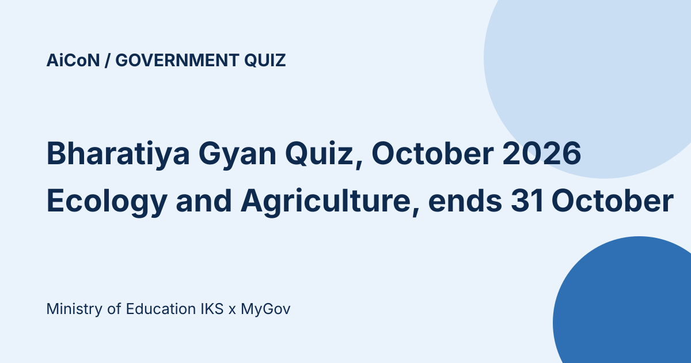

Bharatiya Gyan quiz on Ecology and Agriculture: ₹3,000 book hamper, ends 31 October
The Indian Knowledge Systems (IKS) Division of the Ministry of Education and MyGov run a monthly national quiz on India's traditional knowledge. October 2026's theme is Ecology and Agriculture. It has 10 questions in 300 seconds and is open to all Indian citizens. Winners get a ₹3,000 IKS book hamper and everyone gets an e-certificate. It closes on 31 October 2026, 11:45 PM.

What does the quiz cover?
This month's theme is Ecology and Agriculture. The official page points to texts such as the Vrikshayurveda, Krishi-Parashara, Kashyapiya Krishi-Sukti, the Arthashastra, the Brihat Samhita and Manasara, and topics like soil, crops, water management, forests, biodiversity and seasonal cycles. Resources are at iksindia.org, per the page. A new theme is planned each month.
Rules from the official page
| Who | All Indian citizens. People connected with organising the quiz, and their immediate family, are not eligible. |
|---|---|
| Format | Up to 10 questions within 300 seconds. The quiz starts when you click Play Quiz. |
| Entries | One per participant. Submitted entries cannot be withdrawn. |
| Details | You give your name, email, phone number and any other required details, which MyGov, the Ministry of Education and IKS Division may use to run the quiz and confirm your details. |
| Dates | 1 October 2026, 4:00 PM to 31 October 2026, 11:45 PM. |
What are the prizes?
- An IKS-curated book hamper worth ₹3,000 per winner
- Acknowledgement on IKS social media handles and other official channels, where applicable
- Winners may be invited to attend an IKS event, subject to its nature and schedule
- An e-certificate for every participant
The page says the "top 5 performers every month" are rewarded, but the terms say winners are selected solely by an automated random draw from a pool of entries with all answers correct within time. So a perfect score gets you into the pool; it does not rank you. The page does not say how many winners there are in total beyond the top 5 line.
A careful checklist
- Open quiz.mygov.in and find the quiz yourself.
- Read the full Terms and Conditions on the page.
- Start when you have 5 uninterrupted minutes and finish before 31 October 2026, 11:45 PM.
We did not log in or play. We read the prizes and all 18 rules on the quiz page.
Frequently asked questions
Is there an entry fee?
The page does not mention one.
Is the prize cash?
No. The listed reward is a book hamper worth ₹3,000 per winner.
Sources: Official MyGov quiz page . Checked 9 October 2026. This is an AiCoN explainer, not a government publication.